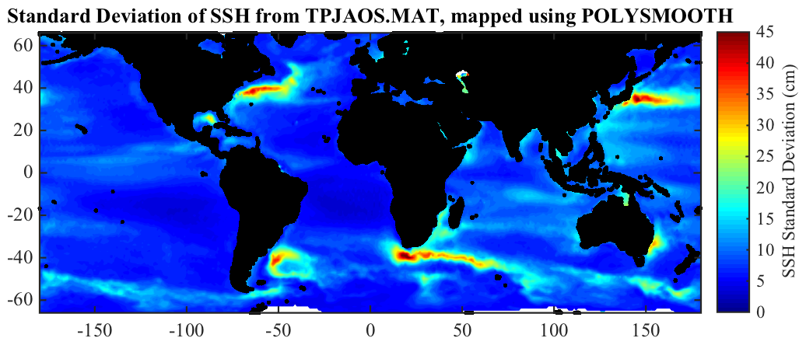
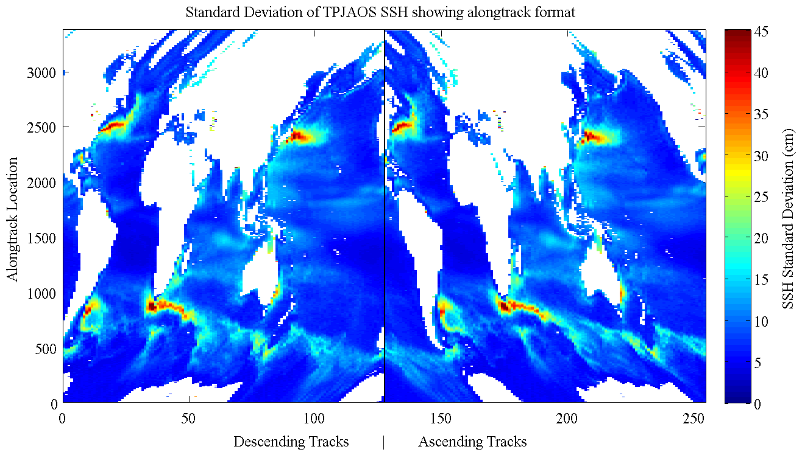

ALONGTRACK Sea surface height anomalies from the Beckley merged dataset.
_______________________________________________________________________

_______________________________________________________________________
ALONGTRACK is a matfile containing the sea surface height anomalies
from the integrated alongtrack altimetry dataset, available online at
http://podaac.jpl.nasa.gov/dataset/MERGED_TP_J1_OSTM_OST_CYCLES_V2
This dataset is produced by Brian Beckley and collaborators on NASA's
Ocean Surface Topography Science Team (OSTST). It contains data from
the TOPEX/Poseidon, Jason-1, and OSTM/Jason-2 satelliets.
ALONGTRACK.MAT is a slightly reorganized matfile version of the NetCDF
data distributed at PO.DAAC, and is redistributed with permission as a
supplement to the software toolbox JLAB.
Various processing steps have been carried out to remove bad data
points, as described below.
LOAD ALONGTRACK loads the structure ALONGTRACK, containing the
following fields:
alongtrack.about Pointer to this document
alongtrack.num Cycle start in DATENUM format [758 x 1]
alongtrack.dnum Days from cycle start date [3375 x 254]
alongtrack.lat Latitude [3375 x 254]
alongtrack.lon Longitude [3375 x 254]
alongtrack.atd Along-track distance (km) [3375 x 254]
alongtrack.mss Mean sea surface height (cm) [3375 x 254]
alongtrack.ssh Sea surface height anomaly (cm) [3375 x 254 x 758]
alongtrack.grid Fields for mapping ssh to grid Structure
The mean sea surface height is given in the PO.DAAC documentation as
being the DTU10 Global Gravity field of Anderson (2010).
Note that sea surface height is here given in centimeters.
The first dimension, of length 3375, is the number of measurements
along each track. The second, of dimension 254, is the number of
tracks split into their descending and ascending portions. The third
dimesion, of length 758, is the number of cycles.
After 'load alongtrack', type 'use alongtrack' to map the structure
fields into named variables in the workspace--num, lat, lon, ssh, etc.
The GRID field is described below under 'Mapping with POLYSMOOTH'.
The figure shown at the top is standard deviation of sea surface
height, mapped onto a regular grid with POLYSMOOTH as described below.
With JLAB installed, it can be re-created with 'about_alongtrack --f'.
ALONGTRACK.MAT is distributed as a part of JDATA, a supplement to the
software toolbox JLAB, and is available at http://www.jmlilly.net.
__________________________________________________________________
Time details
NUM is the time at the beginning of each cycle, in Matlab's DATENUM
format. DNUM is the mean difference from this time, averaged over all
cycles, for each location along each track.
Deviations of the exact time differences from their mean values over
all cycles are small, typically 5% of the mean values.
In order to save space, the exact times for each measurement are not
re-distributed here. Instead DNUM is deduced from the exact time field
available from PO.DAAC.
__________________________________________________________________
Organization
The data has been re-organized somewhat from its original format. Each
track has been split into a descending and ascending portion.
All descending passes are presented first, but flipped north/south to
be sorted by the longitude of their southermost point, beginning with
the first track having a southernmost point east of longitude -180.
Then all ascending passes are presented, also sorted from longitude
-180 based on their initial or southermost point.
This reorganization makes it easier to locate tracks that fall through
particular latitude / longitude points. Also, each row of SSH occurs
at essentially the same latitude, so one can directly average the
alongtrack-data to get meaningful statistics across latitudes.
The time offset from the cycle start time are therefore scrambled among
the different tracks. These time offsets are recorded in DNUM.
The field ATD is the cumulative along-track distance from the initial
point of each track, as computed by SPHEREDIST.
A figure illustrating the ALONGTRACK format is shown below. This is
the standard deviation of sea surface height, as in the figure at the
top but without any mapping. Each column is a track with ascending and
descending tracks split. The distorted view reflects the way the
satellite tracks actually sample the ocean.
_______________________________________________________________________

_______________________________________________________________________
Processing
Several processing steps have been applied to remove bad data points.
Firstly, all data over land has been set to NaNs, affecting a small
number of data points.
Secondly, all data at locations missing 3/4 or more of their values are
set to NaNs. This affects about 3% of all valid data points, and
primarily influences regions with seasonally varying ice cover.
Finally, the data has been despiked, with the spikes set to NaNs. This
is done by looking at the statistics of the first central difference.
A representative standard deviation of this quantity is 4 cm. All
points having a first central difference with a magnitude exceeding
three times this standard deviation, or 12 cm, are set to NaNs. This
also affects about 3% of the valid data points.
__________________________________________________________________
Mapping with POLYSMOOTH
ALONGTRACK includes some pre-computed fields that are useful in mapping
the sea surface height to a regular grid using the POLYSMOOTH function
that is distributed as a part of JLAB.
The GRID field is itself a structure containing the following fields:
grid.lato Latitudes for 1 x 1 degree gridding [133 x 1]
grid.lono Longitudes for 1 x 1 degree gridding [361 x 1]
grid.ds Distances from data to grid point [133 x 361 x 1701]
grid.xs X-location of data from grid points [133 x 361 x 1701]
grid.ys Y-location of data from grid points [133 x 361 x 1701]
grid.index Index into locations of sorted data [133 x 361 x 1701]
These fields characterize all latitude and longititude observations
points that are less than a cutoff distance of 250 kilometers from each
point on a 1 degree x 1 degree grid, as output by SPHERESORT.
To map the standard deviation of sea surface variance, for instance,
use INDEX to locate the nearest observations for each grid point
sshstd=vstd(ssh,3);
zs=nan*zeros(size(xs));
zs(~isnan(index))=sshstd(index(~isnan(index)));
and then call POLYSMOOTH with the fields DS, XS, YS, and ZS.
The figure shown at top is generated with a first-order fit by
POLYSMOOTH using a variable fit radius that grabs the nearest 70 data
points. This is augmented very near to coastlines by blending with a
zeroth-order fit that grabs the nearest 100 data points.
See SPHERESORT and POLYSMOOTH for details.
__________________________________________________________________
Dataset creation
The NetCDF file on which ALONGTRACK.MAT is based are available for
download from PO.DAAC as follows
ftp ftp://podaac-ftp.jpl.nasa.gov
cd allData/merged_alt/preview/L2/TP_J1_OSTM/all
get Merged_TOPEX_Jason_OSTM_Version_V2.3.nc.gz
For completeness, the m-file ALONGTRACK also contains the processing
steps used in the creation of the corresponding matfile. This
requires that the current version of JLAB is on your search path.
Then 'alongtrack --create' will recreate ALONGTRACK.MAT by reading in
the NetCDF file as downloaded from PO.DAAC. This will take a while.
You'll need to make sure to put the directory containing the file on
your Matlab search path using ADDPATH, e.g. 'addpath ~/Data/beckley'.
__________________________________________________________________
See also JDATA, ABOUT_FLOATS, ABOUT_DRIFTERS.
'about_alongtrack --f' generates the two figures shown above.
Usage: about_alongtrack
about_alongtrack --f
about_alongtrack --create
__________________________________________________________________
This is part of JLAB --- type 'help jlab' for more information
(C) 2014--2015 J.M. Lilly --- type 'help jlab_license' for details